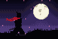

Samurai X
- NovoFoi adicionada uma carta mágica lendária que, por 30 s, te transforma num samurai: você fica 30% mais rápido, pula mais alto, ganha um pulo duplo e não leva dano de queda. Ela volta em 90 s.
- NovoA arma vira uma espada. O tiro corta, em sequência de três cortes: 34, 34 e 44 de dano, e o terceiro joga longe. Cada corte dá um passo na direção do inimigo.
- NovoCorrendo, o tiro vira uma estocada (44). No ar, um corte (40), uma vez por pulo. Agachado no ar, você mergulha e acerta todo mundo em volta quando cai (46), derrubando quem pegar.
- NovoO E vira um passo relâmpago, também no ar. Um tiro logo depois dele é um corte relâmpago (46). O Q continua sendo o rolamento.
- NovoQuem leva um corte fica atordoado um instante e não consegue atirar.
- NovoDepois de 5 s sem atacar, o samurai guarda a espada na bainha. O próximo golpe é o saque: um corte largo e forte, de 68 de dano. Correndo, ele atravessa quem estiver no caminho.
- NovoO botão do escudo vira a guarda: enquanto você segura, as balas que vêm pela frente voltam para onde você mira. A guarda devolve a bala normal e a da Bala Grande; duas Balas Grandes atravessam.
- NovoA espada vai ao encontro de cada bala antes dela chegar: na cabeça, dos lados ou nas pernas.
- NovoA guarda também segura a espada de outro samurai. Levantada no último instante, ela apara o golpe e deixa quem atacou desequilibrado por quase 1 s.
- NovoO R trava a mira num inimigo a até 15 m: a câmera fica nele e os cortes vão na direção dele. A trava solta se ele passar de 20 m, morrer ou sumir de vista.